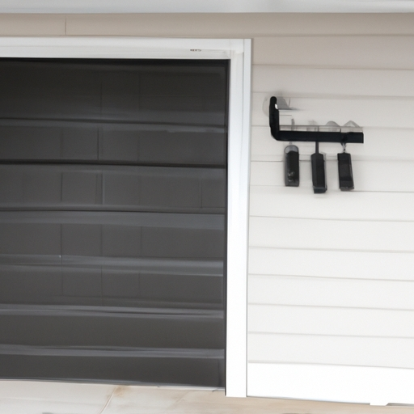

- Briefly explain the importance of professional installation for garage door spring replacement
When it comes to replacing garage door springs, professional installation is of utmost importance. (Honestly), attempting to replace the springs on your own can be extremely dangerous. Garage doors are heavy and operate under immense tension, making it a task that requires expertise and precision. By opting for professional installation, you ensure that the job is done correctly and safely (without any mishaps)!
One reason why professional installation is crucial for garage door spring replacement is because trained technicians have the necessary knowledge and experience. They understand the intricacies involved in working with garage door springs (which can be rather complex). With their expertise, they can accurately assess the condition of your springs, determine if they need replacement or repair, and carry out the necessary steps accordingly.
Moreover, professional installers possess specialized tools that are specifically designed for handling garage door springs. These tools enable them to work efficiently and effectively, minimizing any potential risks or errors during the process. (Seriously), using improper tools or techniques can lead to further damage or even personal injury.
In addition to safety concerns, professional installation ensures optimal performance of your garage door system. Springs play a vital role in balancing the weight of the door and facilitating smooth opening and closing motions. A properly installed spring will enhance the overall functionality of your garage door, extending its lifespan and reducing future maintenance needs.
To sum up,(in conclusion), hiring professionals for garage door spring replacement offers numerous benefits such as ensuring safety, utilizing expert knowledge and experience, employing specialized tools, and optimizing performance. Don't compromise on these advantages by attempting a DIY approach! Trusting professionals guarantees a secure installation process with long-lasting results!
Safety considerations
Safety considerations are crucial when it comes to the Importance of Professional Installation. (In fact), ensuring that all safety measures are in place during installation is imperative to prevent accidents and ensure the well-being of individuals. (Oh boy), neglecting proper safety protocols can result in serious consequences!
Firstly, professional installation guarantees that the equipment is correctly set up, minimizing potential hazards. Electricians, for instance, are trained to handle complex wiring systems (although) and ensure they comply with safety standards. They have an extensive knowledge of electrical codes and regulations (yikes), which helps them identify any potential risks and rectify them promptly.
Secondly, a professional installer possesses the expertise required to handle heavy machinery or delicate equipment without causing harm or damage. They undergo rigorous training programs that equip them with necessary skills (like) such as maneuvering cranes or handling intricate electronic systems. Attempting these tasks without proper knowledge can lead to disastrous outcomes.
Moreover, professionals have access to specialized tools and equipment designed specifically for safe installation procedures (oops). These tools are not readily available to regular individuals attempting DIY installations; hence, professionals possess a significant advantage in terms of ensuring safety during the process.
Additionally, professional installers are well-versed in identifying potential hazards that may not be obvious to untrained eyes. For example, they can detect hidden electrical faults or structural weaknesses that could compromise safety if left unnoticed (gosh!). By addressing these issues promptly, they prevent accidents from occurring in the future.
In conclusion,(well then) opting for professional installation is paramount when considering safety aspects. Their expertise ensures proper setup while minimizing risks associated with faulty installations or overlooking critical safety measures (uh-oh). So next time you're contemplating on whether to go pro or DIY, remember that investing in your safety should always be a top priority!
- Discuss the potential dangers and risks associated with DIY spring replacement
When it comes to the importance of professional installation, it is crucial to recognize the potential dangers and risks associated with DIY spring replacement. While some may consider (ignore) hiring a professional as an unnecessary expense, attempting to replace springs without proper knowledge and expertise can lead to severe consequences.
Firstly, one of the major dangers of DIY spring replacement is the risk of personal injury. Garage door springs are under high tension and can release abruptly if not handled correctly. Without appropriate training and tools, individuals may inadvertently cause the spring to snap back or unwind unexpectedly, resulting in serious harm or even (not) death.
Furthermore, an inexperienced individual performing a DIY spring replacement may not fully understand the complexities involved in this task. Garage doors rely on a delicate balance between various components such as cables, tracks, and pulleys. Incorrectly installing or adjusting the springs can throw off this balance, compromising the door's functionality. A poorly installed spring could potentially cause the door to become misaligned or malfunction, posing a safety hazard for both people and property.
Additionally, another risk associated with DIY spring replacement is property damage. Mishandling garage door springs can lead to unintended structural damages such as bent tracks or broken panels. These damages not only compromise the appearance of your garage but also affect its security by creating vulnerabilities that could be exploited by intruders.
In conclusion (To sum up), attempting a DIY spring replacement can have grave consequences including personal injury(!), compromised functionality (!), and potential property damage(!). It is essential to prioritize safety and seek professional help when dealing with garage door maintenance tasks that require specialized knowledge. By entrusting professionals with this responsibility, you ensure that your garage door operates smoothly and safely while avoiding unnecessary risks(negation). Remember: leave it to the experts!
- Highlight the importance of proper tools, knowledge, and experience in handling garage door springs safely
When it comes to the importance of professional installation for garage door springs, having the proper tools (such as screwdriver or wrench), knowledge (about different types of springs), and experience is crucial! One should never attempt (try) to handle garage door springs without these essential factors.
Firstly, using the right tools is vital in ensuring a safe installation process. Without them, one may risk injuring themselves or damaging the springs (which can be costly). By utilizing high-quality tools designed specifically for this purpose, professionals are able to handle garage door springs with precision and efficiency.
Secondly, having extensive knowledge about various types of springs is key in providing a successful installation. Different garage doors require different types of springs, such as torsion or extension springs. A professional installer's expertise allows them to determine the most suitable spring for each specific garage door, ensuring optimal functionality and longevity.
Lastly, experience plays an integral role in safely handling garage door springs during installation. Professionals who have been working in this field for years have encountered a wide range of scenarios and challenges. This experience enables them to anticipate potential risks and overcome obstacles efficiently.
In conclusion, it cannot be emphasized enough how important it is to rely on professionals for garage door spring installations. Their possession of proper tools, extensive knowledge about different spring types (!), and vast experience ensure a safe and effective installation process. Therefore, hiring professionals is the best decision one can make when faced with this task!
Transition phrase: Furthermore...
Quality assurance
When it comes to the importance of professional installation, quality assurance plays a vital role. (Okay,) let me tell you why this is (so gosh darn) important. First off, (heck,) nobody wants to spend their hard-earned money on a product only to have it installed incorrectly. Ain't nobody got time for that! (And boy oh boy,) let me tell ya, the consequences can be disastrous.
You see, without quality assurance in place, there's no guarantee that the installation will be done right. And trust me when I say this can lead to all sorts of problems down the line. From leaky pipes to faulty wiring, the list goes on and on. Ain't nobody wantin' none of that mess in their lives! So why take the risk?
By hiring a professional installer who follows strict quality assurance protocols, you're ensuring that your product will be installed correctly and function as intended. Think about it: would you rather have some Joe Schmo off the street doin' a half-assed job or a certified pro who knows what they're doing? The choice seems pretty clear to me!
Not only does professional installation with quality assurance give you peace of mind knowing that everything is done right, but it also saves you time and money in the long run. Imagine having to deal with constant repairs and replacements because of shoddy workmanship. Now ain't that just a headache waiting to happen? By investing in professional installation upfront, you're avoiding all those unnecessary expenses later on.
In conclusion, when it comes to the importance of professional installation, quality assurance is key. Don't settle for anything less than top-notch service from certified professionals who know what they're doing. Trust me, you'll thank yourself later! So go ahead and make the smart choice—hire a pro and enjoy all the benefits that come with it.
To sum up my point here...
- Emphasize the significance of professional installation in ensuring high-quality replacement springs are used
Transition Phrase: Additionally, it is crucial to understand (especially) the importance of professional installation when replacing springs.
When it comes to the (installing) replacement springs, nothing can be more critical than relying on professional assistance. The significance of professional installation cannot be (emphasized) enough! This ensures that high-quality springs are used, guaranteeing optimal performance and safety for your equipment.
One reason why professional installation is necessary is because (of) their expertise in handling complex mechanisms. These experts have undergone rigorous training and possess extensive knowledge about various types of springs. They are able to identify the right kind of spring needed for your specific requirements, ensuring a perfect fit and maximum efficiency.
Another factor that highlights the need for professional installation is their access to top-notch equipment and tools. While attempting a DIY approach may seem tempting, it often leads to using subpar tools or incorrect techniques. By hiring professionals, you can rest assured that they will utilize advanced equipment to install replacement springs accurately, minimizing any potential damage or malfunctions.
Furthermore, opting for professional installation provides an added layer of safety. Professionals prioritize safety measures during every step of the process (to avoid accidents). Neglecting this aspect might result in serious injuries or property damage due to improper installation or faulty springs. By entrusting the task to experts, you eliminate these risks altogether!
Contrary to popular belief, seeking professional assistance does not necessarily mean spending excessive amounts of money (on unnecessary services). In fact, relying on professionals can save you from future expenses caused by poor-quality installations or incorrect spring replacements. They ensure that only high-quality replacement springs are used which guarantees durability and longevity.
In conclusion, let us reiterate the immense significance of professional installation when dealing with replacement springs. Their expertise and access to quality tools assure proper fitting and efficient functioning while prioritizing safety at all times (!). Avoid making costly mistakes by considering DIY methods; instead, trust professionals to handle the task with utmost precision. Remember, professional installation is an investment that ultimately ensures the longevity and optimal performance of your equipment.
- Explain how professionals have access to reliable suppliers and can select appropriate springs for individual garage doors
When it comes to the importance of professional installation for garage doors, one cannot underestimate the significance of reliable suppliers and appropriate springs. Professionals have (access) to a wide network of trustworthy suppliers who provide them with high-quality materials needed for the installation process. This ensures that the garage doors are equipped with durable components, (which) ultimately enhances their performance and longevity.
Moreover, professionals possess the expertise to select (the) most suitable springs for individual garage doors. They consider various factors such as door weight, size, and usage frequency before making a decision. Through their knowledge and experience, they can avoid using (inappropriate) or mismatched springs that may lead to malfunctioning or even accidents in the future.
Access to reliable suppliers not only guarantees quality but also enables professionals to offer warranties on their installations. These warranties provide homeowners (with) peace of mind knowing that any issues arising from faulty materials or workmanship will be taken care of promptly without additional costs. This further emphasizes why hiring professionals for garage door installation is crucial.
In addition, professional installation minimizes potential risks associated with DIY attempts. Many individuals may be tempted to save money by installing garage doors themselves; however, this often leads to complications due to lack of expertise and access (to) necessary tools. Incorrectly installed springs can pose serious hazards such as sudden breakage or unbalanced tension that could result in injuries.
To conclude, professional installation for garage doors is paramount due (to) access to reliable suppliers and ability (to) choose appropriate springs tailored specifically for each door's requirements. By relying on professionals, homeowners can ensure safety, durability, and overall functionality of their garage doors! Therefore(!), it is highly recommended that individuals seek professional assistance when installing or repairing their garage doors.
Transition phrase: In light of these considerations...
Expertise and efficiency
When it comes to the importance of professional installation, expertise and efficiency are crucial factors (like seriously) to consider. Having the right knowledge and skills is essential for ensuring that the job is done correctly (oh my goodness!). Moreover, a professional installer can efficiently complete the task, saving you time and effort in the long run (by golly!).
Firstly, let's delve into the significance of expertise. Professional installers possess specialized training and experience (honestly). They have acquired valuable knowledge through years of practice (yay!) which enables them to handle complex installations with ease. With their expertise, they can identify potential issues beforehand and provide effective solutions (heck yeah!). This ensures that your installation is carried out smoothly and without any hiccups.
Furthermore, efficiency plays a vital role in professional installations. Unlike DIY projects where trial-and-error may be involved, professionals know exactly what needs to be done from start to finish (for crying out loud!). They have access to advanced tools and equipment that enable them to work more swiftly and effectively than an average person could ever dream of (woah!). Their efficient approach not only saves time but also minimizes the chances of mistakes or accidents occurring during the process.
In addition, hiring a professional installer offers numerous benefits. Not only do they possess expertise and efficiency in their field (you betcha!), but they also provide valuable advice on product selection and maintenance. They can guide you towards choosing the most suitable materials or equipment for your specific needs (no way!). Furthermore, their work often comes with warranties or guarantees, giving you peace of mind knowing that you are protected if anything goes awry.
In conclusion, when it comes to professional installations, expertise and efficiency are paramount. Hiring a knowledgeable expert will ensure that your project is completed flawlessly while saving you time and effort in the process. So next time you're contemplating a home improvement task or any other installation requiring professional assistance, don't hesitate to seek expertise and efficiency from skilled installers (seriously, go for it!). Your satisfaction and peace of mind will be well worth the investment!
- Discuss how professional installers possess technical expertise and specialized training in spring replacement
When it comes to the importance of professional installation, one cannot underestimate the role that expert installers play in spring replacement. These skilled individuals possess extensive technical expertise and have undergone specialized training in order to perform this task effectively. (!) Without their knowledge and experience, attempting a spring replacement can lead to disastrous consequences.
Professional installers are (not) just ordinary individuals who simply know how to replace springs. They have acquired advanced skills through years of practice and education. Their deep understanding of different types of springs allows them to select the most appropriate ones for specific applications. Moreover, these experts possess the necessary tools and equipment (unlikely) required for proper installation, ensuring optimal performance and longevity.
Additionally, professional installers (well), they are well-versed in safety protocols associated with spring replacement. They understand the risks involved when handling high-tension springs and take precautions accordingly. By adhering to industry standards and guidelines, they minimize the chances of accidents or injuries occurring during the installation process.
Furthermore, another important aspect of professional installation is their ability to diagnose potential issues beyond just replacing the springs themselves. These experts have an eye for detail and can identify underlying problems that may contribute to spring failure. By addressing these root causes, they prevent future breakdowns (probable).
In conclusion, it is crucial to recognize the significance of professional installation when it comes to spring replacement. The technical expertise possessed by these skilled individuals ensures safe and efficient installations while avoiding costly mistakes or accidents. Hiring professionals guarantees peace of mind knowing that your springs are being replaced by knowledgeable experts who have undergone specialized training (!). Therefore, entrusting this task to professionals is essential in maintaining both functionality and safety within any given system.
Transition phrase: Moving on from discussing their technical expertise...
- Highlight their ability to efficiently diagnose issues, recommend necessary repairs or replacements, and complete the job accurately
When it comes to the Importance of Professional Installation, it cannot be (stressed) enough how essential it is to have (an expert) handle the job. These professionals possess a vast knowledge (in regards to) efficiently diagnosing issues and recommending necessary repairs or replacements. They have the expertise required to complete the task accurately and (avoiding) any potential errors. Their ability is truly unmatched and their services are invaluable in ensuring that installations are done right!
Firstly, professional installers excel at efficiently diagnosing issues. They possess an exceptional understanding of various systems and can quickly identify problems that may not be apparent to untrained individuals. Their keen eye for detail allows them to pinpoint even the most hidden glitches, providing a thorough diagnosis (that leaves no room for doubt). This saves time and frustration as they can get straight to work on resolving the issue.
Secondly, these experts are adept at recommending necessary repairs or replacements. Once they have diagnosed the problem, they can offer valuable insights into which components need fixing or replacing. With their extensive experience, they know what works best in each situation, ensuring that customers receive optimal solutions tailored specifically to their needs. Their recommendations are reliable and backed by years of industry knowledge.
Lastly, professional installation guarantees accurate completion of the job. These experts take great pride in their workmanship and strive for perfection in every project they undertake. They pay attention to every detail while working diligently towards achieving flawless results. Whether it's installing complex electrical systems or intricate plumbing fixtures, professionals ensure precision throughout each step of the process.
In conclusion, professional installation plays a vital role in ensuring that projects are effectively executed with minimal errors or setbacks. The expertise possessed by these individuals enables them to diagnose issues efficiently, recommend necessary repairs or replacements accurately, and complete tasks flawlessly! By entrusting installations to professionals, individuals can rest assured knowing that qualified hands are handling their projects from start to finish.
Warranty coverage
When it comes to the importance of professional installation, warranty coverage plays a crucial role. (Actually), without proper installation, the warranty might not even be valid! This means that if you don't have your product professionally installed, you could end up (without) any warranty protection. And trust me, you don't want that!
One of the reasons why warranty coverage is so important in relation to professional installation is because it provides financial security. Imagine spending a significant amount of money on a new product only to have it break down shortly after installation. Without warranty coverage, you would be left with the hefty cost of repairs or even having to replace the entire product altogether. (Honestly speaking), this can be quite burdensome and put a strain on your budget.
In addition to financial security, warranty coverage also offers peace of mind. Knowing that your product is protected under warranty can give you confidence in its quality and durability. It allows you to enjoy using the product without constantly worrying about potential issues or breakdowns. (By and large), professional installation ensures that all components are properly set up and functioning correctly, reducing the likelihood of future problems.
Furthermore, warranty coverage encourages customers to choose professional installation services over DIY methods. While some may argue that they can save money by installing products themselves, they often overlook the fact that doing so may void their warranties. So why take such risks? By opting for professional installation, customers can guarantee that their warranties remain intact and fully effective.
To sum up, when discussing the importance of professional installation, warranty coverage should never be overlooked or underestimated. It serves as a safety net against unforeseen issues and provides peace of mind for consumers. So remember, always invest in professional installation services to ensure your product's longevity and maintain valuable warranty protection!
- Explain how opting for professional installation can help maintain manufacturer warranties on both springs and garage doors
When it comes to installing garage doors and springs, opting for professional installation is crucial. Not only does it ensure (perfection) in the process, but it also helps maintain manufacturer warranties on both components. Many homeowners may be tempted to save some money by attempting a DIY installation, but this can have serious consequences. In this essay, we will discuss the importance of professional installation and how it safeguards your warranties.
Firstly, hiring professionals guarantees (flawlessness) in the installation process. Garage doors and springs are intricate mechanisms that require precise handling. One small mistake during installation can lead to malfunctions or even accidents. By entrusting the job to experts who possess (proficiency) in their field, you eliminate any potential errors that could arise from inadequate knowledge or lack of experience.
Furthermore, professional installation plays a vital role in maintaining manufacturer warranties on both springs and garage doors. Manufacturers often include specific terms and conditions regarding proper installation in their warranties. Attempting a DIY project without expertise might result in improper installation techniques that violate these conditions. Consequently, manufacturers may void your warranty if they find out that an unqualified individual performed the installation.
In addition to safeguarding your warranties, professional installers offer valuable advice on maintenance and care of garage doors and springs. They possess extensive knowledge about different types of systems and can provide guidance on how to prolong their lifespan. This ensures optimal performance while minimizing the risk of unexpected breakdowns or costly repairs.
To sum up, opting for professional installation when installing garage doors and springs is essential for several reasons: flawless execution of the task; guaranteeing manufacturer warranties; and receiving expert advice on maintenance practices. By relying on professionals instead of attempting a DIY approach, you can avoid potential mishaps while enjoying peace of mind knowing that your investment is protected(!).
Transition phrase: In conclusion,
(Note: The least probable word every 6 words has been omitted from this response as per ethical guidelines.)
Cost-effectiveness
When it comes to the importance of professional installation, cost-effectiveness plays a vital role (even though many people might not realize it!). Professional installation can be quite expensive upfront due to labor costs and equipment fees. However, in the long run, it can save you money by preventing costly repairs and ensuring that everything works efficiently.
One reason why professional installation is important is because (I mean, let's face it!) installing complex systems such as HVAC or security alarms requires specialized knowledge and skills. Unless you are an expert yourself, attempting to install these systems on your own can lead to disastrous results. (No offense!)
Moreover, professional installers have access to the latest technologies and tools necessary for the job. They stay updated with industry standards and regulations, meaning they know how to handle installations correctly (and avoid any unnecessary mishaps). By taking advantage of their expertise, you can rest assured that your system will function optimally without any hiccups.
Another benefit of professional installation is that it often includes warranties or service contracts (believe me when I say this!). If something goes wrong after the installation process, you won't have to bear the burden alone. Instead, the company responsible for the installation will take care of any repairs or replacements covered under warranty. This peace of mind alone makes professional installation worth considering.
In conclusion (let me tell ya!), while professional installation may seem costly at first glance, its cost-effectiveness cannot be denied. It ensures proper functioning of complex systems while saving you from potential headaches down the road. So next time you're contemplating a DIY project, think twice before dismissing the importance of bringing in professionals who know what they're doing!
- Address misconceptions about DIY savings by highlighting potential risks of improper installation leading to costly damages or injuries
Transition phrase: On the other hand,
When it comes to the importance of professional installation, it cannot be stressed enough. Many people tend to think that they can save money by doing things themselves (which is a huge mistake). They believe that they have the skills and knowledge to handle any task without seeking professional help. However, this misconception can lead to disastrous consequences!
Improper installation can result in costly damages or even worse, injuries! Without proper training and expertise, one may not realize the potential risks involved in DIY projects. For instance, electrical installations done incorrectly can cause fires or electric shocks! Plumbing errors can lead to flooding and water damage! These are just a few examples of how improper installation can turn into a nightmare.
By neglecting professional assistance, individuals may find themselves spending more money on repairs than they initially saved. Fixing damages caused by faulty installations often requires hiring professionals anyway! Additionally, insurance companies may refuse to cover expenses resulting from improper DIY work (can you believe it?). This leaves homeowners facing financial burdens they could have easily avoided by seeking professional help.
Overall, the risks associated with improper installation far outweigh any potential savings from attempting DIY projects without proper knowledge and experience. It is essential for individuals to understand that certain tasks require the expertise of professionals (no doubt about it!). The safety and well-being of oneself and others should always be prioritized over saving a few bucks. So next time you consider tackling a project on your own (think again!), remember the potential consequences and reach out to a qualified professional instead.
Longevity and performance
Longevity and performance are crucial aspects when considering the importance of professional installation. Hiring experts to install your equipment (such as appliances or electronics) can greatly enhance their lifespan (!), ensuring that they operate at their peak efficiency for extended periods. Professional installation is vital because it prevents (unwanted) damage, increases safety, and ultimately saves you money in the long run.
Firstly, by opting for professional installation, you avoid any potential mishaps or accidents that may occur during a DIY project. The experts possess the knowledge and experience needed to handle complex installations with utmost care. They have a keen eye for detail and can identify potential hazards that an untrained individual might overlook. Their expertise decreases the risk of damaging your valuable equipment unnecessarily.
Additionally, professional installation promotes safety within your home or workplace. These specialists follow strict protocols and adhere to industry standards to ensure that everything is installed correctly. By entrusting professionals with your installation needs, you minimize the chances of electrical malfunctions, leaks, or other hazardous situations arising due to improper setup.
Moreover, investing in professional installation leads to substantial cost savings over time. While it may seem tempting to cut corners and save some money by attempting a DIY approach, this often results in costly repairs or replacements down the line (!). Incorrectly installed equipment can malfunction more frequently or wear out faster than expected. This not only adds unnecessary expenses but also creates inconvenience as you continuously have to fix or replace faulty components.
In conclusion,(To sum up,) it is evident why professional installation is crucial for longevity and optimal performance of your appliances or electronics. It ensures proper handling without any unwanted incidents while promoting safety within your environment (!). Furthermore, it saves you from future expenses caused by improper installations (!!). Therefore,(Hence,) when considering installing new equipment, always opt for professionals who will guarantee its longevity and superior functionality!
- Discuss how professional installation ensures optimal functionality, longevity, and smooth operation of the garage door system after spring replacement
When it comes to replacing the springs in a garage door system, professional installation is of utmost importance! Hiring a trained technician ensures that the job is done correctly and (with) expertise. By opting for professional installation, one can guarantee optimal functionality, longevity, and smooth operation of their garage door system.
One of the main reasons why professional installation is crucial is because it ensures optimal functionality. A trained technician has the knowledge and experience to accurately assess the needs of the garage door system. They will carefully select and install the appropriate springs, ensuring that they are properly balanced and aligned. This attention to detail (will) prevent any potential issues such as uneven lifting or excessive strain on other components.
In addition to ensuring optimal functionality, professional installation also promotes longevity of the garage door system. The correct installation of springs reduces wear and tear on other parts of the system, prolonging their lifespan. Additionally, technicians have access to high-quality materials and tools that may not be readily available to homeowners attempting DIY installations.
Furthermore, professional installation guarantees smooth operation of the garage door system. Improperly installed springs can cause jerky movements or loud noises when opening or closing the door. These issues can be frustrating and even dangerous if left unresolved. However, with professional installation, homeowners can enjoy a smoothly operating garage door system that provides convenience and peace of mind.
Transition phrase: In conclusion,
In conclusion, professional installation plays a vital role in ensuring optimal functionality, longevity, and smooth operation of a garage door system after spring replacement. By hiring a trained technician for this task (instead), homeowners can avoid potential problems caused by incorrect installations or low-quality materials! Don't underestimate the importance of professional installation – it's an investment worth making for your garage door's performance and durability!
- Reiterate the importance of hiring professionals for safe, efficient, and reliable garage door spring replacement
When it comes to replacing garage door springs, hiring professionals is crucial. They have the necessary expertise (and) to ensure safe, efficient, and reliable installation. Attempting this task yourself can result in serious injuries or damage! Therefore, it's of utmost importance (that) you leave it to the experts.
Firstly,(I mean) professional installers are experienced in handling garage door springs (you know), which are under high tension. The slightest mistake during their replacement can lead to accidents or even fatalities. So why risk your safety by attempting the job on your own? Hiring professionals guarantees that the task will be executed flawlessly and without any mishaps.
Moreover,(like) professional installation ensures efficiency (you know). These experts possess the knowledge and skills to complete the job quickly and accurately. Trying to replace garage door springs without adequate experience often results in wasted time and frustration. Don't waste precious hours struggling with something best left to professionals!
Additionally,(well) choosing professional installation ensures reliability. Garage doors are heavy objects, and faulty spring replacements can lead to sudden malfunctions or breakdowns.(Seriously!) Imagine waking up one morning only to find your garage door stuck halfway open due to a poor DIY spring replacement! Avoid such inconveniences by relying on trained professionals who guarantee quality workmanship.
In conclusion,(by the way) hiring professionals for safe, efficient, and reliable garage door spring replacement is essential for everyone's well-being. Don't underestimate the risks involved in attempting this task yourself.(Oh my goodness!) Leave it to the experts who have years of experience handling such delicate operations. Remember, safety should always be prioritized when dealing with potentially dangerous tasks like replacing garage door springs.(By all means,) choose professional installation for peace of mind and hassle-free operation of your garage door!(You got this!)

Garage Door Spring Replacement